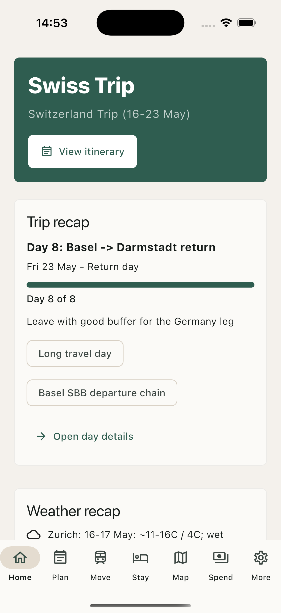
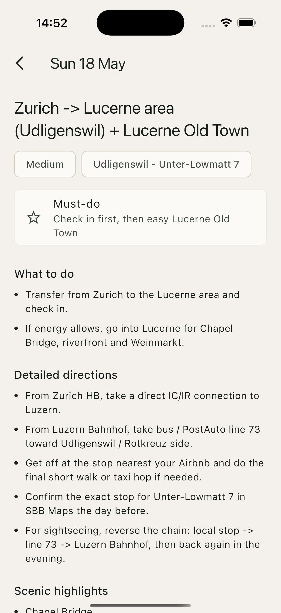
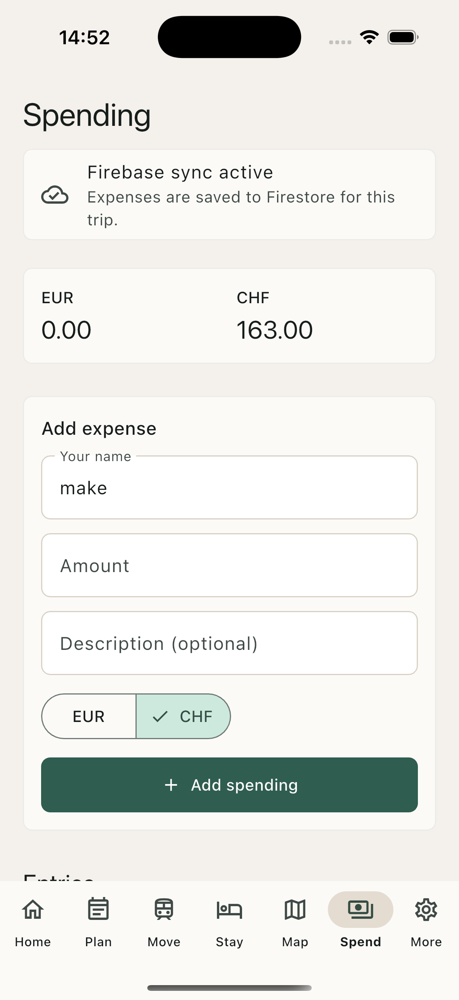
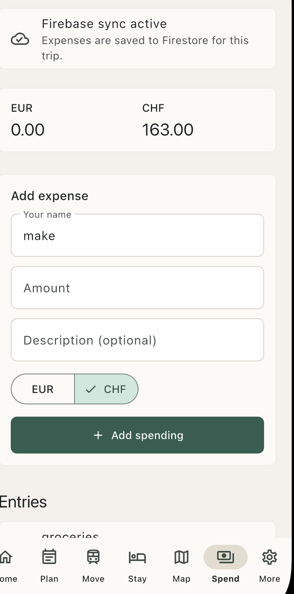
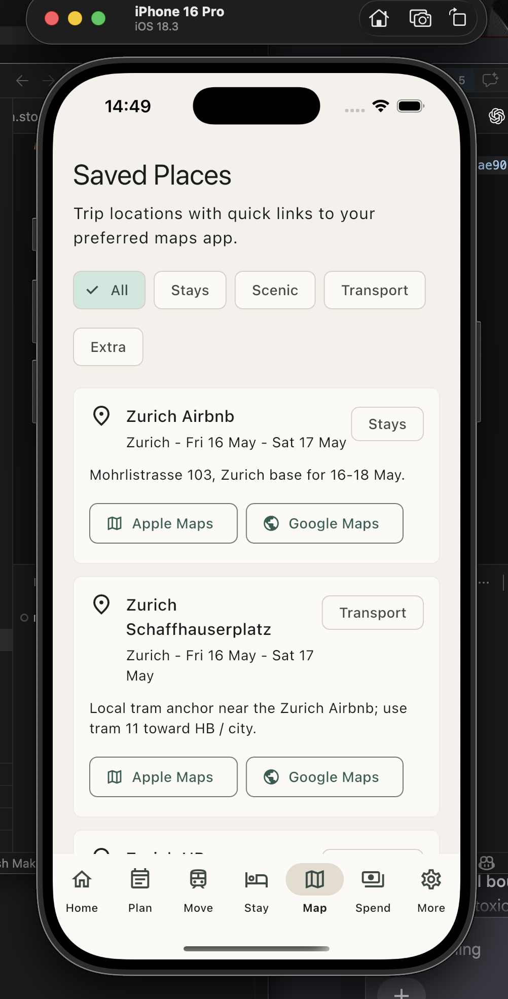
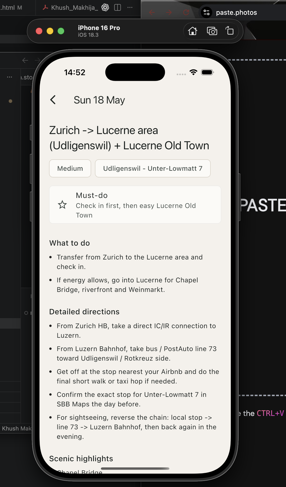
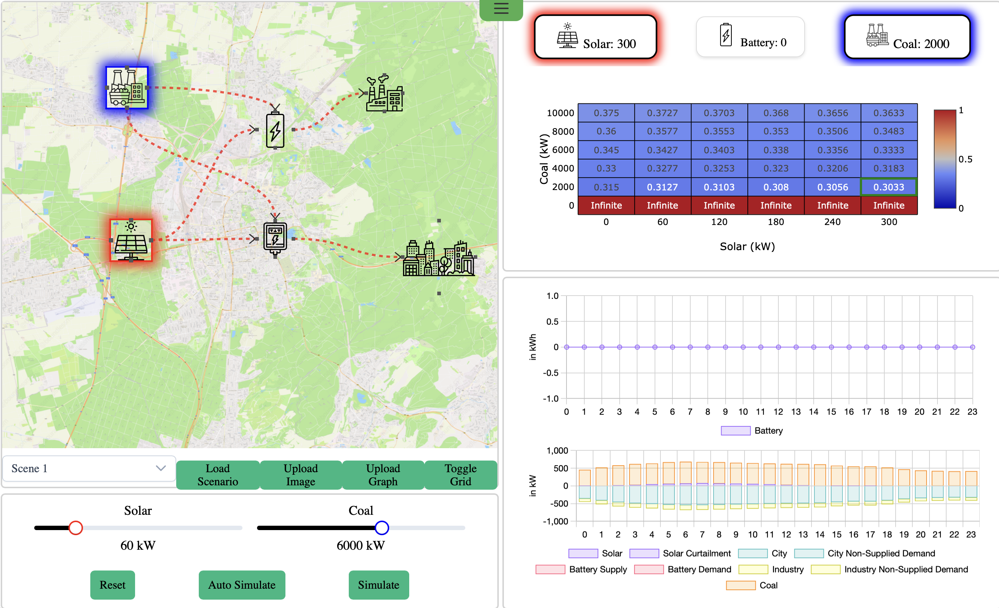
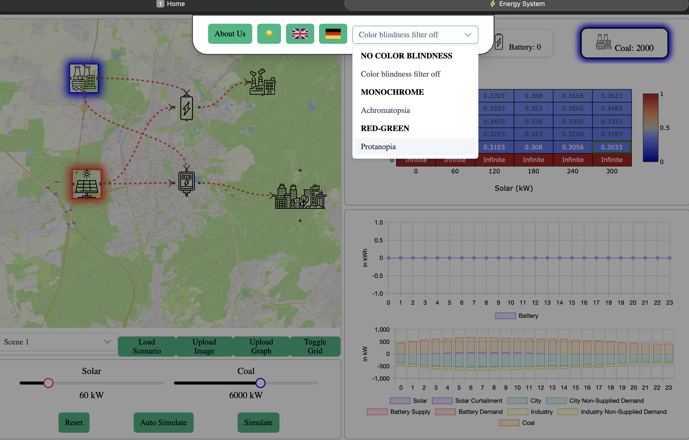
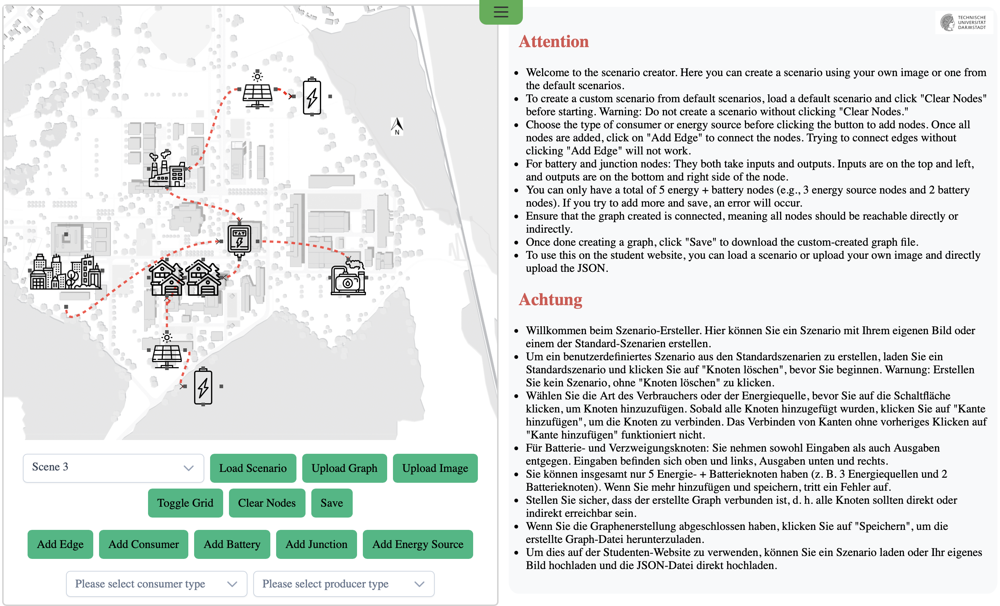

October 2022 – present
B.Sc. Informatik
Technische Universität Darmstadt
Focus areas: Object-Oriented Programming, IT Security, Software Engineering
Available for Werkstudent, internship, and software engineering roles
Computer Science Student at TU Darmstadt
Software Engineering · Full-Stack Development · Mobile Applications · Automation
About Me
I am a Computer Science student at Technische Universität Darmstadt with practical experience in full-stack development, software engineering, mobile applications, and student project coordination. I enjoy building useful software, learning new technologies, and applying theoretical knowledge in practical projects.
Education
Technische Universität Darmstadt
Focus areas: Object-Oriented Programming, IT Security, Software Engineering
Studienkolleg Magdeburg
T-Kurs, grade 2.1
Goethe Institute Pune
Experience
Technische Universität Darmstadt
Technische Universität Darmstadt
Technische Universität Darmstadt
Projects
A personal mobile trip planner for an eight-day Switzerland trip, built around real itinerary data, saved places, transport notes, accommodation details, and shared spending.
Flutter · Dart · Firebase · Cloud Firestore · Xcode






An interactive planning and simulation tool for energy scenarios, combining map-based network modeling with production, demand, storage, and accessibility-aware visualizations.
Energy systems · Simulation UI · Data visualization · Accessibility



Python · Whisper · pycaw · comtypes · keyboard
Skills
Languages
Contact
I am open to Werkstudent, internship, and software engineering opportunities where I can contribute, learn, and build useful software.